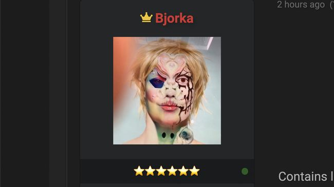

Presiden Joko Widodo
membentuk tim khusus menyusul sejumlah serangan siber dari hacker Bjorka ke instansi pemerintahan.
Pembentukan tim dilakukan setelah pemerintah menggelar rapat di Istana Kepresidenan Jakarta. Tim itu akan menindaklanjuti serangan-serangan siber yang diterima beberapa waktu terakhir.
"Perlu ada emergency response team terkait untuk menjaga data, tata kelola data, yang baik di Indonesia dan untuk menjaga kepercayaan publik," kata Menteri Komunikasi dan Informatika Jhonny G Plate di Istana Kepresidenan Jakarta, Senin (12/9).
Jhonny menyebut tim tersebut akan terdiri dari Badan Siber dan Sandi Nasional (BSSN), Kominfo, Polri, dan Badan Intelijen Negara (BIN).

Jokowi Bentuk Tim Khusus Respons Serangan Bjorka
Berita Terkini

Pemuda siksa monyet 12 kali sampai mati demi konten

Geger Luhut dkk Belum Booster COVID, Kemenkes: Datanya Belum Tentu Asli

Mane ke Muller: Jangan Sampai Salah Ngumpan ke Lewandowski

Ten Hag Dinilai Sukses Redam Ego Ronaldo di MU